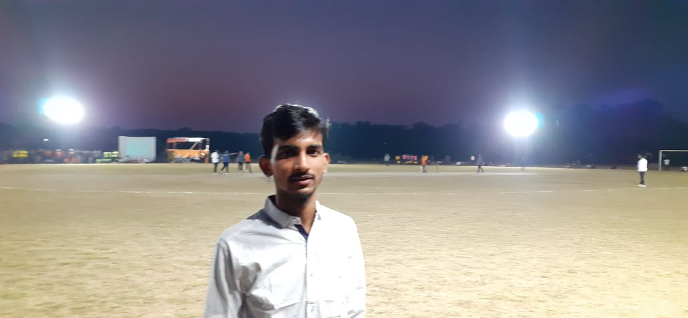

Roshan Raj
I am currently a pre-final year student in an integrated M.Sc. program in Physics.
My current interest lies in the field of Quantum Foundation and Relativistic Quantum Mechanics,
understanding the fundamental ingredients such as mass, time, charge and symmetries of nature. Here is my CV.

Publications
Projects
- 2022: New light on the concepts of observable and indeterminacy in the quantum realm.
- 2022: The pictures of quantum dynamics.
- 2022: On the investigation of two non-neutral static bodies
- 2021: Dynamics of two objects considering the minimum total potential energy principle.
- 2020: Designing an e-commerce portal. Certificate
Workshops
- 2021: Quantum Fields, Geometry & Representation Theory, ICTS-TIFR,Bangalore
- 2021: Capacity building for sustainable Rural Development, UBA, Surat
- 2020: Data analysis using MS Excel, BBD NITM, Lucknow.
- 2020: MATLAB Tools And Applications, BBD NITM, Lucknow.
- 2020: Risk management \& Simulation efforts, NIT Jaipur
- 2020: Data Science and Machine Learning, Sri Venkateswara College of Engineering, TN
Talks & Books
- 2021: Unification in Mathematics, IntERAct Seminar series | Org: Dept. of Mathematics and Humanities, SVNIT-Surat. Certificate
- 2021: KālSanGharsha: A Collection Of Short Poems| Self Published ebook | Kindle Amz.
Achievements
- 2016-Present: Awardee & recipient of NTS Scholarship of marit, NCERT New Delhi.
- 2023: GATE Qualified (Physics-AIR 3409)
- 2020: Winner (Physics), InQuest 4.0, SCOSH SVNIT
- 2015: Bronze Medalist (School-level), 17th NSO, Patna
Courses
Elective Courses:
- Basics course on Relativity
- Advanced Mathematical Methods,
- Density Functional Theory,
- Remote Sensing,
- Computational Methods,
- Quantum Field Theory,
- Many body and Relativistic Quantum Mechanics
Online Courses:
- 2021: A Course in Math History, Prof. Amitabh Virmani, IIT gandhinagar
- 2020: Classical Electromagnetism-I, Dr. HC Verma,CCE, IIT Kanpur
- 2020: Learning Physics through Simple Experiments, Dr. HC Verma,CCE IIT Kanpur
- 2020: The Advance course on STR, Dr. HC Verma, CCE IIT Kanpur
- 2020: TCSiON Career Edge -TCS, Mumbai
- 2020: Life Skills for Engineers (Level 1), CEMCA & University of Hyderabad
- 2019: The basics of Quantum Mechanics, Dr. HC Verma, CCE, IIT Kanpur
Qualifications
- 2019-2024: Five Years Integrated. M.Sc.(Physics), S.V. National Institute of Technology, Surat, Gujarat. (current 9.32/10)
- 2018: Intermediate, Loyola High School, Patna, Bihar (CBSE).
- 2016: Matriculation, St. Paul's High School, Patna, Bihar (ICSE).
Responsibilities & Positions
- 2022-23: Student Coordinator, QUANTA SEMINAR, Department of Physics, SVNIT Surat
- 2021-22: Joint Academic Affairs Secretary, Academic Affairs Council, SVNIT Surat
- 2020-22: Co-convener & Member: Society for Cultivation of Science and Humanities (SCOSH), SVNIT Surat Student Chapter
Hobbies
- Hindi Poetry
- Cooking Indian Cousines
- Bloging
Contact
- Email: Kaalkrit@outlook.com
- Institute Email: I19ph002@phy.svnit.ac.in
- Address: Swami Vivekanand Bhawan, Sardar Vallabhhai National Institute of Technology,
Ichchhanath Surat- Dumas, Road, Keval Chowk, Surat, Gujarat 395007